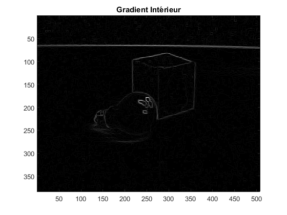
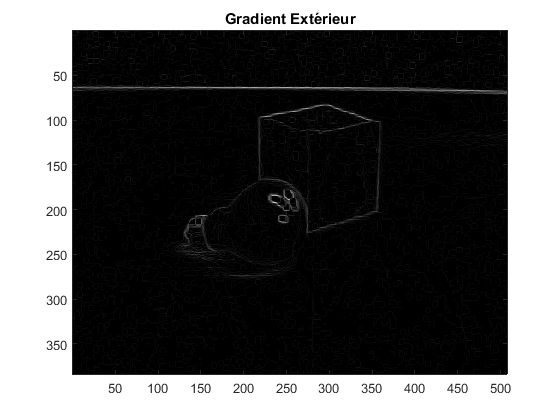
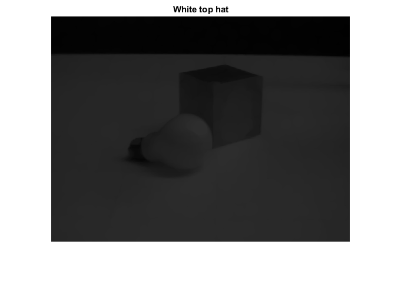
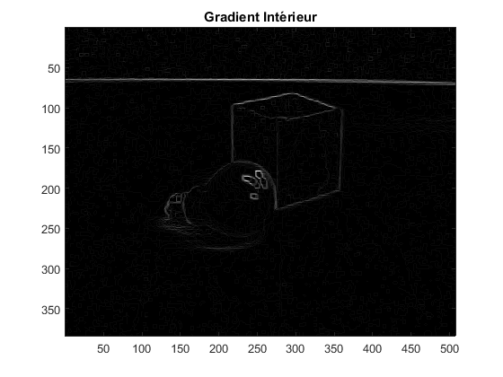
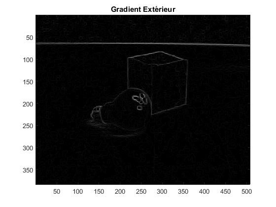
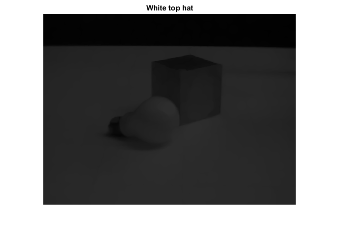

clear all; close all; %Affichage de l'image de base en niveaux de gris I=imread('Ampoule.gif'); colormap('gray'); figure(1); imagesc(I); title('Image de base'); disk=strel('disk',3); %Marqueur en forme de disque de taille 3 V4=[0,1,0;1,1,1;0,1,0]; %Marqueur en forme de croix Ero=imerode(I,V4); %Erosion de l'image par le marqueur V4 Dil=imdilate(I,V4); %Dilatation de l'image par le marqueur V4 Sym=Dil-Ero; %Gradient symétrisé Int=I-Ero; %Gradient intérieur Ext=Dil-I; %Gradient extérieur %Affichage du gradient symétrisé figure(2); colormap('gray'); imagesc(Sym); title('Gradient Symétrique'); %Affichage du gradient intérieur figure(3); colormap('gray'); imagesc(Int); title('Gradient Intérieur'); %Affichage du gradient extérieur figure(4); colormap('gray'); imagesc(Ext); title('Gradient Extérieur'); B=strel('disk',8); %Marqueur en forme de disque de taille 8 I2=imopen(I,B); %Ouverture de l'image de base par le marqueur précédent I2=I-(I-I2); %Application de l'ouverture sur l'image de base (image auquelle on enlève l'ouverture de l'image) %Affichage de l'image corrigée figure(5); imshow(I2); title('White top hat');
   
  